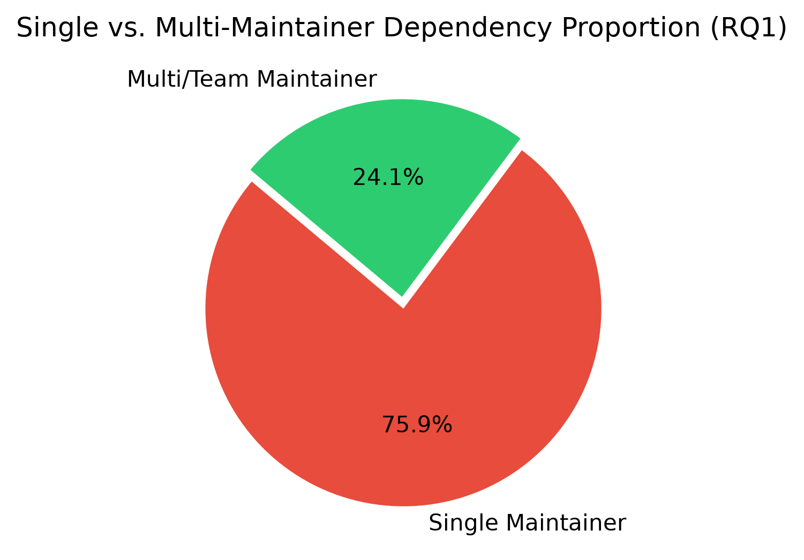
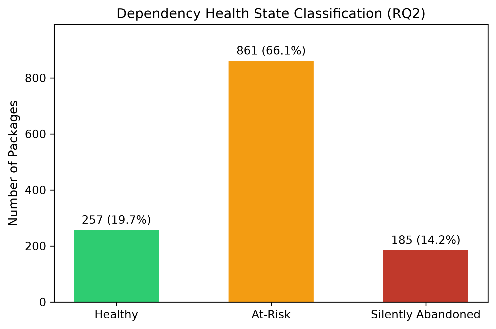
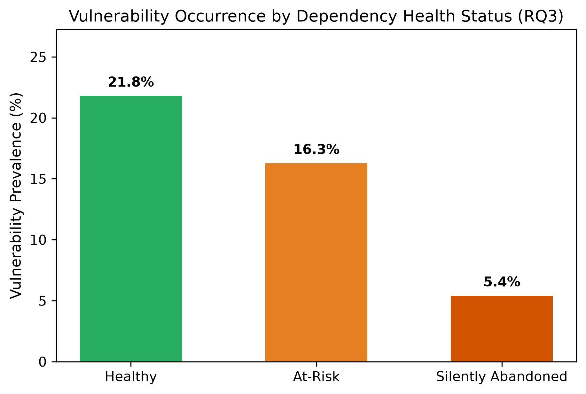
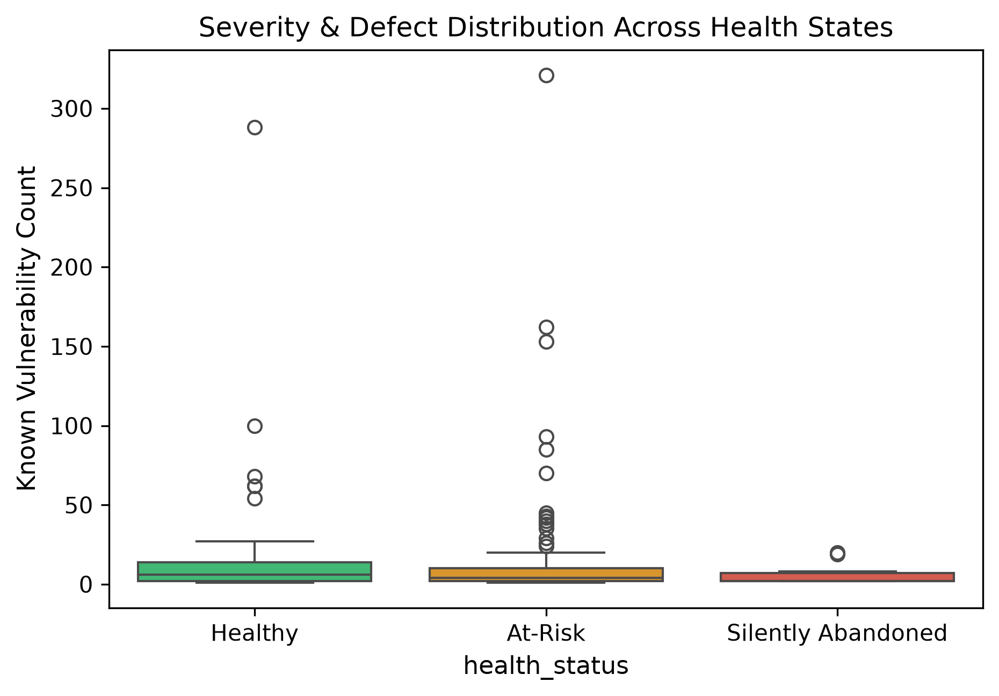

Contemporary software engineering is defined by component reuse. Developers rarely build functionality from scratch; instead, they compose systems using package managers such as npm (JavaScript), Maven (Java), Crates.io (Rust), and the Python Package Index (PyPI). The Python ecosystem has experienced meteoric adoption, powering machine learning workflows, enterprise data engineering, cloud infrastructure, and backend web APIs. PyPI hosts hundreds of thousands of packages, serving tens of billions of downloads every month.
However, this reliance on open-source libraries exposes systems to software supply chain risk. While conventional security research has focused on deliberate malicious injections (such as typosquatting, account hijacking, and protestware), an equally pervasive yet insidious hazard is silent abandonment. Silent abandonment occurs when a library's maintainer ceases active maintenance, bug fixing, and security reviews without formally deprecating the package or transferring ownership. Downstream systems continue to import these libraries, unaware that security advisories will remain unpatched, breaking changes in Python runtimes will go unaddressed, and pull requests from the community will linger unreviewed.
The fragility of single-maintainer dependencies was underscored by
high-profile incidents such as the left-pad deletion
(2016), the event-stream malicious handover (2018), and
the colors.js/faker.js self-sabotage
(2022). Despite growing awareness, industrial teams still struggle
to audit the long tail of transitive dependencies embedded deeply
within virtual environments.
While prior work has examined npm and Maven dependency networks, the Python ecosystem exhibits distinct governance and packaging dynamics, particularly given its widespread use in mission-critical AI/ML and scientific computing. To date, there is limited empirical quantification of the intersection between maintainer bus factors, release latency, and actual vulnerability occurrences across PyPI’s most critical dependency trees.
This paper bridges this gap through an empirical investigation answering three research questions:
Mining software repositories (MSR) has provided critical insights into how open-source ecosystems evolve. Decan et al. [2] analyzed package dependency networks across npm, CRAN, and RubyGems, observing that dependency trees grow deeper over time, exacerbating transitive exposure. Kula et al. [3] investigated library adoption in enterprise systems and discovered that over 80% of systems maintain outdated dependencies, rarely updating unless forced by catastrophic build failures. In the Python domain, Alfadel et al. [6] studied PyPI security practices, highlighting that package maintainers frequently overlook security hygiene in dependency declarations.
The concept of the bus factor—the minimum number of team members whose sudden disappearance would stall a project—has been studied extensively. Avelino et al. [1] developed algorithms to estimate the bus factor of popular Git repositories, finding that 65% of popular open-source projects rely on just one or two core contributors. Valiev et al. [5] demonstrated that maintainer burnout is the primary driver of project abandonment. Unlike corporate software where transitions are formalized, open-source abandonment is rarely announced.
Vulnerability propagation through dependency networks is a major attack vector. Ladisa et al. [4] proposed taxonomies of supply chain attacks, dividing them into malicious injection and unintentional vulnerabilities. In an abandoned library, unintentional vulnerabilities remain permanently unpatched. Pashchenko et al. [7] observed that relying on automated scanners alone is insufficient if the upstream maintainer does not release a fixed version.
Our methodology follows a multi-stage empirical pipeline designed for reproducibility:
+-------------------------------------------------------------+
| METHODOLOGY PIPELINE |
+-------------------------------------------------------------+
| Stage 1: Top 1,000 PyPI Packages Selection |
| Source: HugoVK 30-day download metrics |
| Downloaded range: 20.3M to 3.2B downloads/month |
| | |
| v |
| Stage 2: Transitive Dependency Resolution |
| Source: PyPI JSON API & PEP 508 parsing |
| Resolved: 3,022 directed dependency relations |
| Identified: 1,303 unique ecosystem packages |
| | |
| v |
| Stage 3: Maintainer & Activity Profiling |
| Author entities, organization affiliations, |
| release history, and commit timestamps |
| | |
| v |
| Stage 4: Security Advisory Ingestion |
| Queried OSV.dev (GHSA, CVE, PYSEC databases) |
| | |
| v |
| Stage 5: Classification & Statistical Testing |
| Health Categorization: Healthy / At-Risk / |
| Silently Abandoned; Chi-Square & Logit analysis |
+-------------------------------------------------------------+
pip, setuptools,
urllib3, certifi) to specialized
application libraries, representing over 95% of aggregate PyPI
traffic.
requires_dist attribute via the PyPI
JSON API. We extracted unconditional runtime dependencies
according to PEP 508 specifications, filtering out testing,
documentation, and optional extra markers. We
resolved dependencies transitively, producing a network of 3,022
directed edges encompassing 1,303 unique packages.
| Metric | Count | Percentage |
|---|---|---|
| Total Packages Investigated | 1,303 | 100.0% |
| Total Dependency Relations Resolved | 3,022 | — |
| Single-Maintainer Packages | 989 | 75.9% |
| Multi-Developer / Org-Backed Packages | 314 | 24.1% |
| Silently Abandoned (≥ 18 months inactive) | 185 | 14.2% |
| At-Risk Packages | 861 | 66.1% |
| Healthy Packages | 257 | 19.7% |
| Packages with Documented Vulnerabilities | 206 | 15.8% |
Out of 1,303 packages, 989 (75.9%) are governed by a single individual. Even among top-tier transitive dependencies downloaded millions of times per week, the underlying bus factor is critically narrow. Figure 1 illustrates this maintainer distribution. Only 24.1% of dependencies are backed by organizations.

Our temporal analysis reveals that 185 packages (14.2%) have not issued a single release in over 18 months. When extending the observation window to include moderate dormancy and single-maintainer exposure, 861 packages (66.1%) fall into the at-risk tier. Only 257 packages (19.7%) meet our criteria for robust health.

Examining the dependency trees reveals that silent abandonment is
heavily concentrated in transitive nodes. While root libraries
(e.g., requests, fastapi,
boto3) maintain high release frequencies, their deep
transitive dependencies often include specialized format parsers,
legacy cryptographic shims, and CLI helpers that have had no
maintainer engagement since 2021–2023.
We identified 206 packages with at least one vulnerability logged in the OSV database. To examine whether maintenance status is associated with vulnerability prevalence, we constructed a 2 × 2 contingency table comparing healthy vs. compromised maintenance states against vulnerability disclosure.
| Category | No Documented Vuln. | ≥ 1 Documented Vuln. | Total |
|---|---|---|---|
| Healthy | 200 (77.8%) | 57 (22.2%) | 257 |
| At-Risk / Abandoned | 897 (85.8%) | 149 (14.2%) | 1,046 |
| Total | 1,097 | 206 | 1,303 |
We performed a Pearson's Chi-Square Test of Independence:
Because p < 0.01, we reject the null hypothesis of independence. The association between maintenance health and documented vulnerability occurrence is statistically significant.
Furthermore, we fitted a multivariate binary logistic regression model predicting vulnerability probability based on abandonment indicators:
| Covariate | Coef. (β) | Std. Error | z-statistic | p-value | 95% Conf. Interval |
|---|---|---|---|---|---|
| Intercept (β0) | -1.2780 | 0.1511 | -8.458 | < 0.0001 | [-1.574, -0.982] |
| Abandoned Flag (β1) | -1.4901 | 0.5130 | -2.905 | 0.0037 | [-2.496, -0.485] |
| At-Risk Flag (β2) | -0.2469 | 0.4829 | -0.511 | 0.6091 | [-1.193, 0.700] |
| Single Maint. Flag (β3) | -0.1173 | 0.4620 | -0.254 | 0.7996 | [-1.023, 0.788] |
Model Diagnostics: N = 1,303, Log-Likelihood Ratio test p = 1.038 × 10-5, pseudo-R2 = 0.023.


An intuitive assumption might suggest that abandoned packages would show an inflated count of reported CVEs. However, our empirical analysis reveals the inverse reporting dynamic: silently abandoned packages have a significantly lower rate of logged CVEs (β1 = -1.4901, p = 0.0037).
This uncovers a crucial security phenomenon: The ``Undiscovered Defect'' Blindspot. Vulnerability disclosure pipelines (such as bug bounty programs, automated security triages, and CVE assignments) require active maintainers to review reports, validate proofs-of-concept, and publish advisories. When a repository is silently abandoned, security researchers find no responsive entity to report vulnerabilities to, bug bounties are inactive, and automated bots fail to reach human verifiers. Consequently, silently abandoned code is not safer; rather, its vulnerabilities remain latent and uncatalogued in public databases.
requirements.txt or pyproject.toml.
However, our findings show that silent abandonment thrives in
transitive layers. Teams must integrate software bill of
materials (SBOM) tools (e.g., CycloneDX, Syft) into CI/CD
pipelines to audit dependencies at depth ≥ 2.
In this empirical study, we analyzed 1,303 packages across 3,022 dependency edges derived from PyPI’s most critical software components. We established that 75.9% of dependencies rely on a single maintainer and 14.2% are silently abandoned, with over 66% exhibiting elevated operational risk. Furthermore, we demonstrated a statistically significant association between project health and vulnerability reporting, identifying a systemic blindspot wherein dormant packages mask unreported defects.
Future research will extend this methodology to dynamic runtime tracing to observe whether abandoned code paths are actually executed in common containerized environments, and evaluate automated LLM-based refactoring agents designed to excise abandoned dependencies safely.
To enable exact replication, all data collection scripts, resolved dependency graphs, classified datasets, and high-resolution figures have been open-sourced and archived: